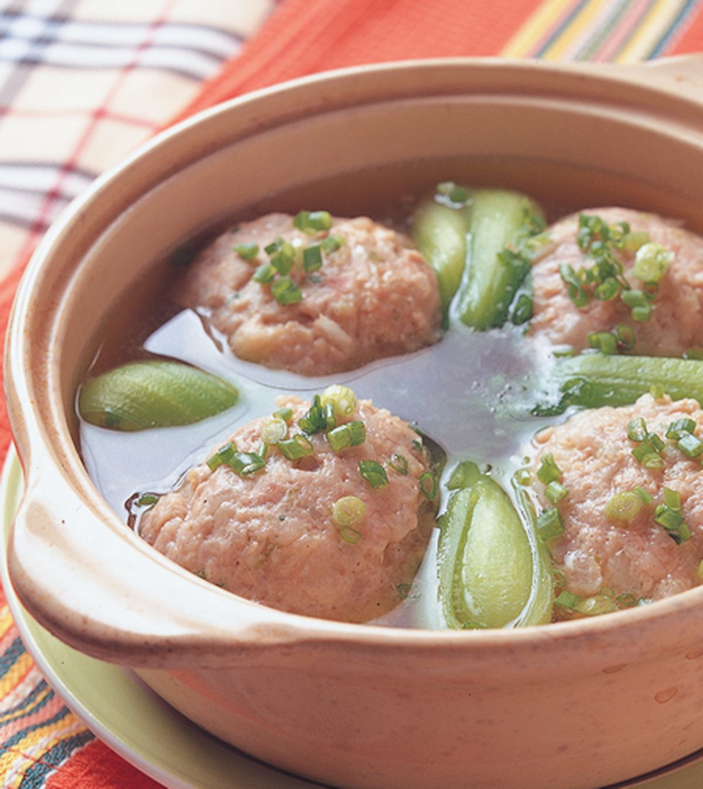
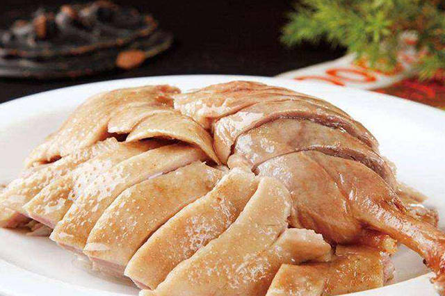
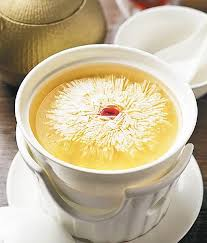

🍛 代表菜色介紹

松鼠桂魚
松鼠桂魚造型宛如松鼠，色澤紅亮。桂魚切花刀炸至酥脆，淋上酸甜醬汁，口感外酥內嫩，酸甜開胃，是蘇菜中非常著名的代表菜品。

清燉獅子頭
獅子頭是以豬肉和肥膘製成的大肉丸，慢火清燉使其入口即化，肉質細膩鮮嫩，湯汁清淡鮮美，富有家常溫馨感，是淮揚菜的經典代表。

金陵鹽水鴨
金陵鹽水鴨選用優質鴨隻，經過鹽水醃製，肉質鮮嫩，鹹香適中，皮薄肉滑，是南京地區的傳統名菜，深受食客喜愛。

文思豆腐
文思豆腐以豆腐切成極細絲，形態如髮絲，配以清澈鮮美的高湯，口感細膩柔滑，是蘇菜中展現刀工與湯品工藝的經典菜色。